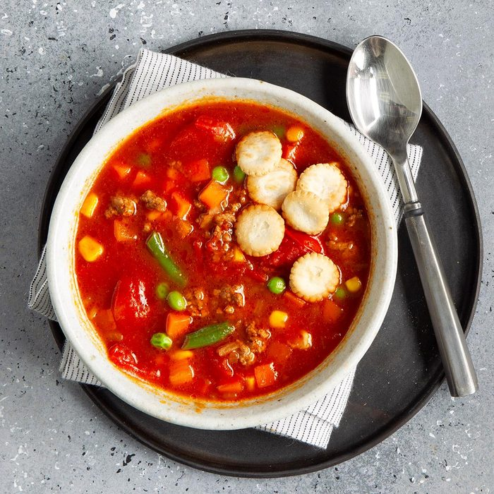

Beef soup

Discription
This colorful, easy beef soup comes together in minutes. Even my husband, who admits he's no cook, makes it on occasion.
Use an Italian or Mexican seasoning blend, or add your own mix of spices. Cayenne pepper, paprika and chili powder will give this beef soup a kick. Reach for herbs like dried oregano, parsley and rosemary for a classic comfort food dish.
- 1/2 pound ground beef
- 2 cups water
- 1 can (14-1/2 ounces) stewed tomatoes
- 1 package (10 ounces) frozen mixed vegetables
- 1 can (8 ounces) tomato sauce
- 1 envelope onion soup mix
- 1/2 teaspoon sugar
- In a saucepan over medium heat, cook beef until no longer pink, 3-5 minutes, breaking into crumbles; drain.
- Add the remaining ingredients; bring to a boil.
- Reduce heat; cover and simmer until vegetables are tender, 10-15 minutes.